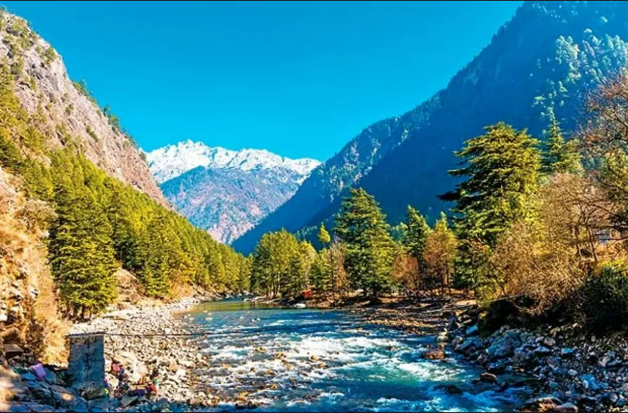

nearby places

Mcleodaganj

Dalhouise

Khajjar

Manali
Shimla

Kasol

Vashno Devi
Dharamshala
a most religious place for sikhs
Mcleodaganj
Dalhouise
Khajjar
Manali
Shimla
Kasol
Vashno Devi
Dharamshala
Home of the glorious Golden Temple, the iconic city of Amritsar, portrays the heroic
character of Punjab. The second-largest city of the Indian state of Punjab, Amritsar is colloquially
known as Ambarsar. Apart from the Golden Temple, Amritsar is known for its lip-smacking street food.
A day in this peaceful city starts with the spiritual prayers from Gurudwaras. The original name is
first the ancient lake, then the temple complex, and later the surrounding city, meaning "pool of
ambrosial nectar."
Amritsar is the spiritual and cultural centre of the Sikh Religion. Baisakhi festival brings out
Amritsar's resplendent face with its finest food, clothes and merry-making. This place is also famous
for its Jallianwala Bagh massacre and its proximity to Wagah Border. From Operation Blue Star in the
Golden Temple to the tragedy of the Jallianwala Bagh massacre, Amritsar has seen the worst of
situations and yet emerged like a phoenix through testing times. Amritsar today is a thriving city
with active trade and tourism industries.
| Address | Amritsar,Punjab | |
|
|
||
| how to reach | ||
|
|
||
| nearest airport: |
|
Amritsar airport |
| nearest railway station: |
|
Amritsar railway station |
| nearest bus station: |
|
Amritsar bus station |
|
|
||
| opening hours | ||
|
|
||
| opening time: |
|
Full day open |
| opening days: |
|
All Days |
| Aarti Timings: |
|
2:30AM-11:00PM |
0.9 kms from golden temple
2.0 kms from Golden Temple
3.0 kms from Golden Temple
Golden Temple
Wagha border
Jallianwala Bagh
Partition museum
Harike Wetland
maharaja ranjit singh museum